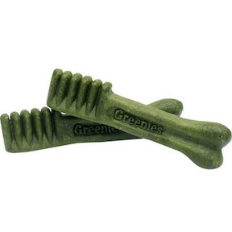

Whenever I eat an apple, Edie sits in front of me begging to have some of mine.
Edie has loved these green toothbrushes since she was a small pup, and she still eats them now. No matter where she is in the house she comes running when I yell, "greenies."

Of course, Edie loves any other treat she is given. Biscuts or homemade treats are also good.